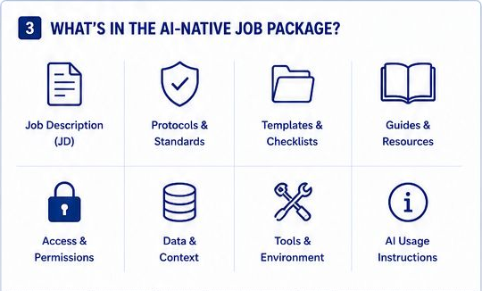

AI-assisted research workflow: the ISIF-AIOS design (v1.0)
Designed · Project · workflow design · v1.0, May 2025 · one-page design · All projects
ISIF-AIOS (ISIF AI Operating System) is the name of the one-page design; it is a workflow, not software.
Context: the fund’s platform (from my CV) As Chair of the fund’s Executive Committee and Advisory Committee (from May 2024), I helped build the fund’s quantitative research platform, a Python multi-asset research and trading framework covering data, signals, backtesting, transaction costs, portfolio accounting, risk control and reporting. ISIF-AIOS is the workflow I designed for how the fund’s members work with AI assistants. I also mentored the fund’s student teams in their first QRT Quantitative Competition (2026; four teams reached the final, two placed second and third).
What I designed
- An eight-step loop from assignment to archive: the Executive Committee sets strategy; a manager issues a role-based job package (.zip); the student works through it with an AI coding assistant (ChatGPT, Codex or Claude Code); the manager approves or requests revision; approved work goes to a knowledge repository.
- A job package of eight parts: job description; protocols and standards; templates and checklists; guides and resources; access and permissions; data and context; tools and environment; AI-usage instructions. It specifies that packages are digitally signed and that protocol files carry a cryptographic hash, so a change by the student or the assistant would show up when a reviewer checks them against the issued package. A hash makes a change detectable; it does not by itself stop one.
- Seven deliverables per task, listed in Exhibit 1.
- Four roles with scoped permissions: Executive Committee (full), Department Head (department), Project Manager (project: assign and review), Contributor (task: execute and submit).
Why it matters on a desk Research teams now write code with AI assistants. The open questions are about control, not capability: which rules the assistant follows, how a change to them is detected, what data it may see, how its output is reviewed, and whether a result can be traced months later. This design answers most of them with packaged context, hashed protocol files, scoped permissions and human sign-off; two remain open: which data may leave the fund, and how an assistant’s output is tested before review.
What the design covers AI coding assistants in research (ChatGPT, Codex, Claude Code) workflow and governance design provenance with hashes role-based permissions handover and knowledge management
| Status | Items |
|---|---|
| Done | One-page design v1.0 (May 2025): workflow, package contents, deliverables, roles. |
| Not shown on this page | Software that builds, signs or verifies packages; use by the fund; any measured effect on quality or time. |
Read with care. The benefits the design lists (consistent quality, faster onboarding and others) are design goals, not measured outcomes. Gaps a fund would close first: (1) which data may be sent to an external AI service; (2) automated tests an assistant’s output must pass before the manager’s review; (3) a record of which assistant, model version and session produced each deliverable (the v1.0 footprint records a task ID, a timestamp and a hash); (4) who holds the signing key. The assistant assists; people decide.
Exhibit 1: What every task must return
| Deliverable | What it is | Why it matters for review |
|---|---|---|
| Implementation | Source code, models or analysis | The work itself, in a form someone else can run |
| Documentation | Human-readable reports | A reviewer can follow what was done without rerunning it |
| Validation | Tests, backtests and verification | The claim and its check arrive together |
| Handover package | Everything the next contributor needs | Work survives a change of student |
| Digital footprint | Unique ID, timestamp and cryptographic hash | Each result can be tied to one task, one time and one version |
| Release package | Release files with a machine-readable manifest (JSON) | A reviewer or a script can check what was delivered |
| Knowledge-base entry | The approved work, stored for later use and reference | The next team starts from it instead of from nothing |
Source: ISIF-AIOS one-page design v1.0 (May 2025), panel 4, “Deliverables for every task”; the right-hand column is my reading.
Key takeaway. In the design, every result is meant to be traceable to the code, the tests and the package version that produced it.
Exhibit 2: One principle, two settings
| ISIF-AIOS v1.0 (specified) | NA-IPCA toolkit v1.2.0 (implemented and logged) |
|---|---|
| Protocol files protected by a cryptographic hash | Configuration-freeze certificate on the defaults |
| Digital footprint for every task | Audit record for every fit, with SHA-256 fingerprints (see one record) |
| Release package with a JSON manifest | SHA-256-pinned release |
| Validation deliverable | Parity and regression tests |
| Handover and knowledge continuity | 189-page handbook and run lineage (NAIPCAState) |
Sources: ISIF-AIOS one-page design v1.0, panels 2–4; NA-IPCA toolkit and Data & Code (release v1.2.0).
Key takeaway. The same rule runs through both: a result counts only if it can be traced and rerun. In the toolkit, comparable controls are implemented and logged; in ISIF-AIOS v1.0 they are specified.
Exhibit 3: The one-page design: workflow, job package, deliverables
![Panel 1 of the design, end-to-end workflow overview, eight steps joined by arrows: 1, Executive Committee defines strategy and approves key initiatives; 2, the manager creates an AI-native job description with goals, deliverables, standards and review criteria; 3, the student receives a role-based package (.zip) with the job description, protocols, templates, resources and context; 4, the student uploads it to ChatGPT, Codex or Claude Code; 5, the AI copilot explains the task and the fund's protocols and guides execution step by step; 6, the AI assists the student to implement, validate and generate the deliverables and documentation; 7, the manager reviews the deliverables and approves or requests revision; 8, approved work is archived in a knowledge repository for reuse.](../assets/img/projects/aios-workflow.png) (opens the full-size image in a new tab)
(opens the full-size image in a new tab)
(opens the full-size image in a new tab) (opens the full-size image in a new tab)
(opens the full-size image in a new tab)Three of the design’s seven panels, cropped from the one-page design by the author; the roles panel is summarised in the brief above. Source: ISIF-AIOS one-page design v1.0 (May 2025), panels 1, 3 and 4.
Key takeaway. The assistant is given context, rules and templates; people make the decisions and sign off, and every step is meant to leave a record that can be checked later.
Where this connects
- Imperial Student Investment Fund(opens in a new tab) · CV: Service.
- Related project: NA-IPCA toolkit, where comparable controls (frozen defaults, an audit record on every fit, a pinned release) are implemented and logged.
- Related project: Firm- and regime-conditioned NLP alpha, a plan that admits agentic AI tools only as research accelerators, gated by the same point-in-time validation as any signal.